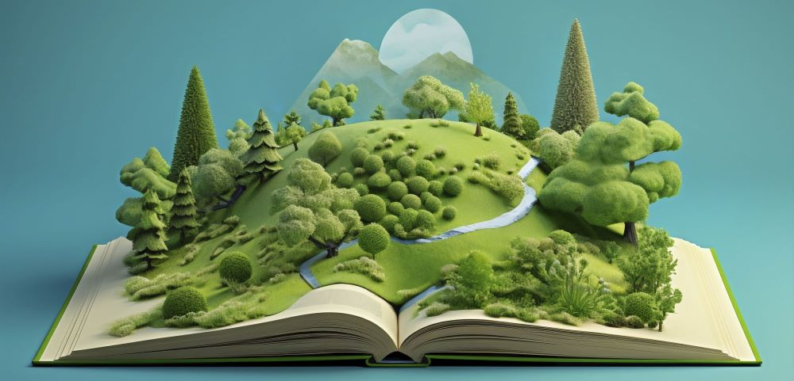

Impacto
El impacto ambiental de la industria del libro: ¿un futuro sostenible?
El mundo de los libros nos abre puertas a un sinfín de conocimientos y aventuras. Sin embargo, detrás de cada página impresa se esconde un impacto ambiental que no podemos ignorar. La industria editorial, a pesar de su innegable valor cultural, genera una huella ecológica considerable.
El papel: protagonista de la huella ambiental
La producción de papel es uno de los principales causantes del impacto ambiental de la industria del libro. Los árboles, fuente principal de la materia prima, se talan a un ritmo alarmante, lo que genera deforestación, pérdida de biodiversidad y erosión del suelo. Según un estudio de 2012, la producción de un solo libro puede implicar la emisión de casi 3 kg de CO2 y requerir más de 2 kWh de energía. Se estima que cada año se talan 15 mil millones de árboles para la producción de libros.
Más allá del papel: otros factores a considerar
La impresión y distribución de libros también contribuyen significativamente al impacto ambiental. El uso de maquinaria pesada, el transporte de materiales y la generación de residuos sólidos son solo algunos de los aspectos que debemos tener en cuenta.
¿Qué podemos hacer como lectores y como comunidades?
Si bien la industria editorial tiene un largo camino por recorrer para minimizar su huella ecológica, como lectores y usuarios de libros, podemos adoptar algunas medidas para reducir nuestro impacto.
El intercambio de libros: una alternativa sostenible
Las plataformas online y físicas de intercambio de libros son una excelente manera de acceder a nuevos títulos sin generar residuos ni consumir recursos adicionales. Al fomentar la reutilización y el intercambio, estas iniciativas contribuyen a reducir el impacto ambiental de la industria editorial y promueven una cultura de consumo más responsable.
Comprar libros de segunda mano
Intercambiar o comprar libros usados es una excelente manera de darles una nueva vida y evitar la producción de nuevos ejemplares. Plataformas online y tiendas especializadas ofrecen una amplia variedad de opciones.
Donar libros
Si tenés libros que ya no leés, donarlos es una forma de asegurarte de que lleguen a otras personas y no terminen en la basura.
Considerar el formato electrónico
Si bien los libros físicos tienen un encanto inigualable, los libros electrónicos pueden ser una alternativa más sostenible, especialmente para libros que no requieren una gran calidad de impresión. Un estudio reciente encontró que la producción de un libro electrónico tiene una huella de carbono hasta un 90% menor que la de un libro impreso.
Apoyar editoriales comprometidas con la sostenibilidad
Cada vez más editoriales están adoptando prácticas ecoamigables, como el uso de papel reciclado, tintas no tóxicas y procesos de impresión eficientes. Investigá qué editoriales están tomando medidas para reducir su impacto ambiental y elegí apoyarlas.
Un futuro sostenible para la industria del libro
La industria del libro tiene la responsabilidad de adoptar prácticas más sostenibles en toda su cadena de producción, desde la selección de materias primas hasta la distribución y el manejo de residuos. La implementación de tecnologías ecoeficientes, el uso de materiales reciclados y la búsqueda de alternativas al papel tradicional son algunos de los pasos que se pueden tomar en esta dirección.
Un compromiso compartido
El cuidado del medio ambiente es un compromiso que nos involucra a todos. Como lectores, podemos ser agentes de cambio al adoptar hábitos de consumo responsable y apoyar iniciativas que promuevan la sostenibilidad en la industria del libro. Juntos podemos construir un futuro donde el acceso a la cultura y la protección del planeta vayan de la mano.